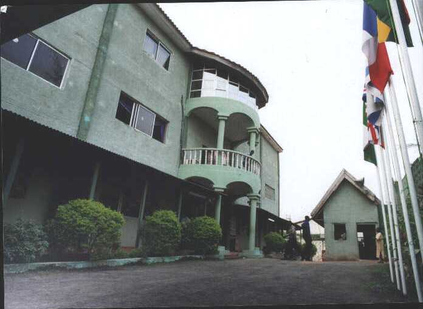

Founded in 1988 by Bishop Lawrence Osagie with a handful of believers, Powerline Bible Church began as a small prayer group committed to the uncompromising preaching of the Word of God. From humble beginnings in a rented hall, the church has grown into a vibrant, multi-generational community impacting Lagos and beyond.
Over the decades, we have witnessed countless testimonies of healing, deliverance, financial breakthrough, and spiritual transformation. Our commitment remains steadfast: to raise a generation of believers who walk in divine power and fulfill God's purpose for their lives.
Through various outreaches, mission trips, and community development projects, Powerline Bible Church continues to be a beacon of hope and faith in Nigeria.